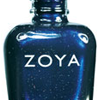

Navy
The dropping temps indicate the perfect time to try a dark navy, which is perfect for the fall!
Camouflage
Dark smoky grey cream with strong teal green undertones. A custom-mixed runway shade created for designer Peter Som.

Mute Gold
Mute Gold nail polish in Monica can be best described as: Light, soft, sparkly with a glossy cream finish. A bit of vibrant couture color, and a dramatic nail look.
Classic Red
If your looking for a classy red, this is a must! Its just beautiful! The perfect red in my opinion...a must to have in nail polish collection.
Oxblood
Rich color and desert-worthy hues instantly transform fingertips into your most covetable accessory for fall. Go twilight-glam with a shimmery plum shade boasting dark chocolaty depth. Tip: Keep nails short and square with saturated colors like these.
Nail Polish Techniques
Here are some nail polish techniques to get you started using these colors, click here.
Manicure Inspiration
To see some awesome manicures that other people have done, click here.